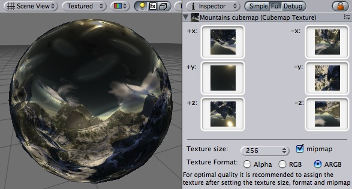

Previous
PreviousCubemap Texture is a collection of six square textures, put onto faces of imaginary cube. Most often they are used to display infinitely faraway reflections on objects, similar to how Skybox displays faraway scenery in the background. Reflective builtin shaders in Unity use Cubemaps to display reflection.
You create Cubemap in one of two ways:
- Use Assets -> Create -> Cubemap, set its properties and then drag six Texture assets onto corresponding cubemap "faces".
- Use Texture Import Settings to create a Cubemap from a single square texture.

A mountains cubemap displayed as reflection on the sphere
Properties
| Property: | Function: |
|---|---|
| Textures for right and left cube faces. | |
| Textures for top and bottom cube faces. | |
| Textures for front and back cube faces. | |
| Edge length in pixels that will be used for a single cubemap face. Source textures will be internally scaled to fit this size, there is no need to scale them manually. | |
| Enable to create mipmaps. | |
| Format of the created cubemap. |